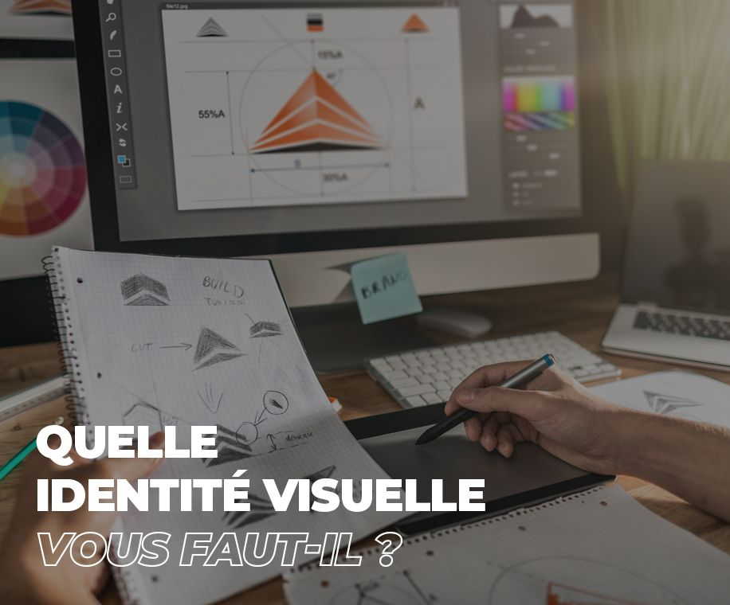

<div class="container">
    <div class="row">
        <div class="presentationGauche">

            <div class="miseEnPageGauche">

                

            </div>

        </div>

        <div class="presentationDroite">

            <div class="miseEnPageDroite">

                <div class="positionAccordion">
                    <div class="accordion">
                        <h1>Pourquoi faire du motion design ?</h1>
                        <p>Le motion design casse avec les codes de communication d'entreprise traditionnelle. Il offre plus de liberté.</p>
                        <p>En motion design, on peut animer des photos, mais aussi des graphiques statistiques, ainsi que des dessins. Ceux-ci peuvent être réalistes ou au contraire très fantaisistes.</p>
                        <p>Bref, on peut réaliser des infographies animées, mais aussi présenter es situations et recourir au storytelling. Il n'y a quasiment pas de limites à ce que l'on peut faire avec cette technique.</p>
                        <p>L'autre atour du motion design, c'est son coût. Il permet de faire l'économie d'une équipe de tournage et du tournage lui-même. Puisque l'essentiel se passe avec des logiciels de motion design.</p>
                        <p>Très visuel, c'est un puissant outil de communication. Il permet d'expliquer simplement des idées complexes.</p>
                        <p>Enfin, ce qui le rend si populaire, c'est son dynamisme. L'animation rend la vidéo captivante.</p>
                    </div>

                </div>

                
            </div>
            
            <div class="buttons">
                <button class="buttonRealisations">Exemples de réalisation</button>
                <button class="buttonBudget">Estimez votre budget</button>
            </div>
            
        </div>
    </div>
</div>